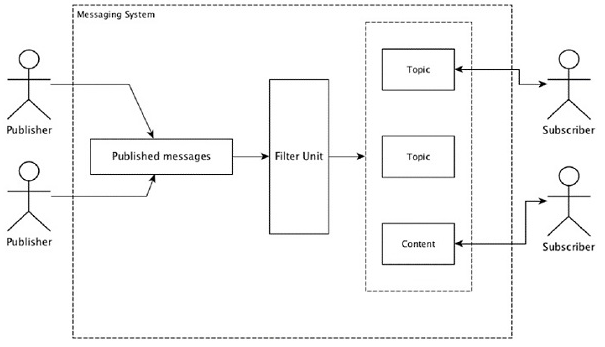

Apache Storm processes real-time data and the input normally comes from a message queuing system. An external distributed messaging system will provide the input necessary for the realtime computation. Spout will read the data from the messaging system and convert it into tuples and input into the Apache Storm. The interesting fact is that Apache Storm uses its own distributed messaging system internally for the communication between its nimbus and supervisor.
Distributed messaging is based on the concept of reliable message queuing. Messages are queued asynchronously between client applications and messaging systems. A distributed messaging system provides the benefits of reliability, scalability, and persistence.
Most of the messaging patterns follow the publish-subscribe model (simply Pub-Sub) where the senders of the messages are called publishers and those who want to receive the messages are called subscribers.
Once the message has been published by the sender, the subscribers can receive the selected message with the help of a filtering option. Usually we have two types of filtering, one is topic-based filtering and another one is content-based filtering.
Note that the pub-sub model can communicate only via messages. It is a very loosely coupled architecture; even the senders don’t know who their subscribers are. Many of the message patterns enable with message broker to exchange publish messages for timely access by many subscribers. A real-life example is Dish TV, which publishes different channels like sports, movies, music, etc., and anyone can subscribe to their own set of channels and get them whenever their subscribed channels are available.
The following table describes some of the popular high throughput messaging systems −
| Distributed messaging system | Description |
|---|---|
| Apache Kafka | Kafka was developed at LinkedIn corporation and later it became a sub-project of Apache. Apache Kafka is based on brokerenabled, persistent, distributed publish-subscribe model. Kafka is fast, scalable, and highly efficient. |
| RabbitMQ | RabbitMQ is an open source distributed robust messaging application. It is easy to use and runs on all platforms. |
| JMS(Java Message Service) | JMS is an open source API that supports creating, reading, and sending messages from one application to another. It provides guaranteed message delivery and follows publish-subscribe model. |
| ActiveMQ | ActiveMQ messaging system is an open source API of JMS. |
| ZeroMQ | ZeroMQ is broker-less peer-peer message processing. It provides push-pull, router-dealer message patterns. |
| Kestrel | Kestrel is a fast, reliable, and simple distributed message queue. |
Thrift was built at Facebook for cross-language services development and remote procedure call (RPC). Later, it became an open source Apache project. Apache Thrift is an Interface Definition Language and allows to define new data types and services implementation on top of the defined data types in an easy manner.
Apache Thrift is also a communication framework that supports embedded systems, mobile applications, web applications, and many other programming languages. Some of the key features associated with Apache Thrift are its modularity, flexibility, and high performance. In addition, it can perform streaming, messaging, and RPC in distributed applications.
Storm extensively uses Thrift Protocol for its internal communication and data definition. Storm topology is simply Thrift Structs. Storm Nimbus that runs the topology in Apache Storm is a Thrift service.